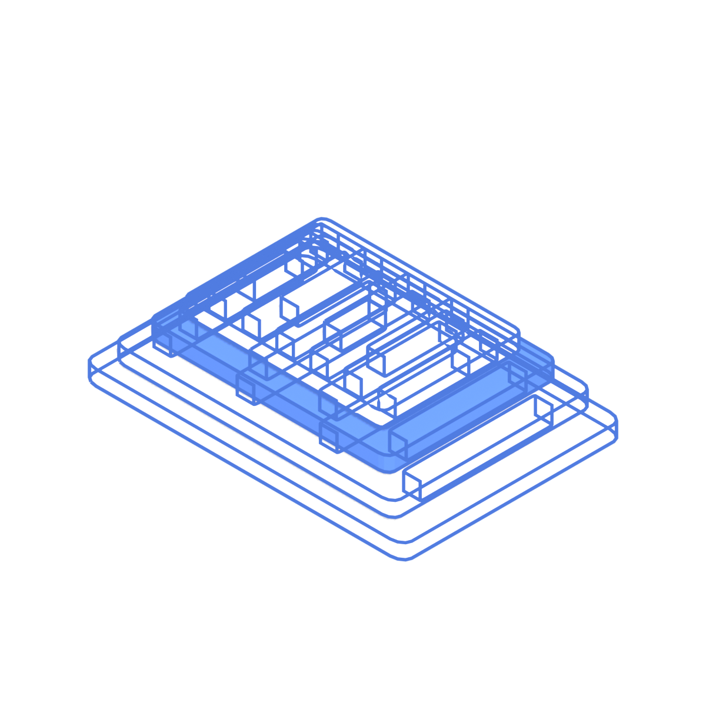

Kako sajt
vozi posetioca.
Jedna plava linija nacrta prolazi kroz ceo sajt, od učitavanja do kontakt forme. Skrol je olovka: sve što vidiš se iscrtava, razlaže i sklapa dok skroluješ. Svaki pokret odgovara na pitanje "gde da gledam sledeće". Na telefonu i uz smanjeno kretanje ostaju isti kadrovi, bez animacije.
Učitavanje: mreža se iscrtava
Linije mreže se povlače sa ivica, procenat broji do 100, pa se nacrt "otvori". Ispod 0,8 s, samo pri prvoj poseti, ne blokira LCP (tekst je već tu).
stranice
siste

Hero: precrtavanje
Plava linija precrta "stranice", a "sisteme" se ispiše slovo po slovo. Sklopljen 3D nacrt se lagano okreće za mišem (do 8 stepeni).

Razlaganje sistema
Sekcija se zakuca (pin), slojevi se razmaknu i svaki dobije kotu sa nazivom tehnologije. Posetilac za 2 sekunde vidi da ne praviš samo izgled nego ceo sistem.

Sklapanje u pravi ekran
Slojevi se spuste jedan na drugi i postanu screenshot. Sken linija prelazi preko njega: levo nacrt (linije), desno gotov proizvod u boji. Isti efekat se koristi na svakoj kartici projekta.
Nit: linija koja vodi
Jedna linija se crta dok skroluješ i "skreće" ka sledećoj sekciji, kao putanja na nacrtu. Desno je lenjir sa listovima koji pokazuje gde si. Klik na list te tamo odvede.

Crtaći sto: projekti bočno
Na /projekti listovi klize horizontalno dok skroluješ nadole. List u centru se podigne i dobije boju. Prevlačenje mišem ili prstom radi takođe. Filter: Klijenti, SaaS, Lični.


Usluge kao predmeti
Četiri 3D predmeta iz Blendera: ekran (sajtovi), meta sa strelicom (Google Ads), slojevi objava (Meta), grafikon sa lupom (SEO). Okreću se sa skrolom, mogu da se uhvate i zavrte.
nacrt.
Kontakt: kraj linije
Linija koja je vodila kroz sajt ulazi u formu i obeleži je. Kad se poruka pošalje, pečat "POSLATO" udari u list. Na 404 strani linija "pukne" i vodi na Pac-Man.